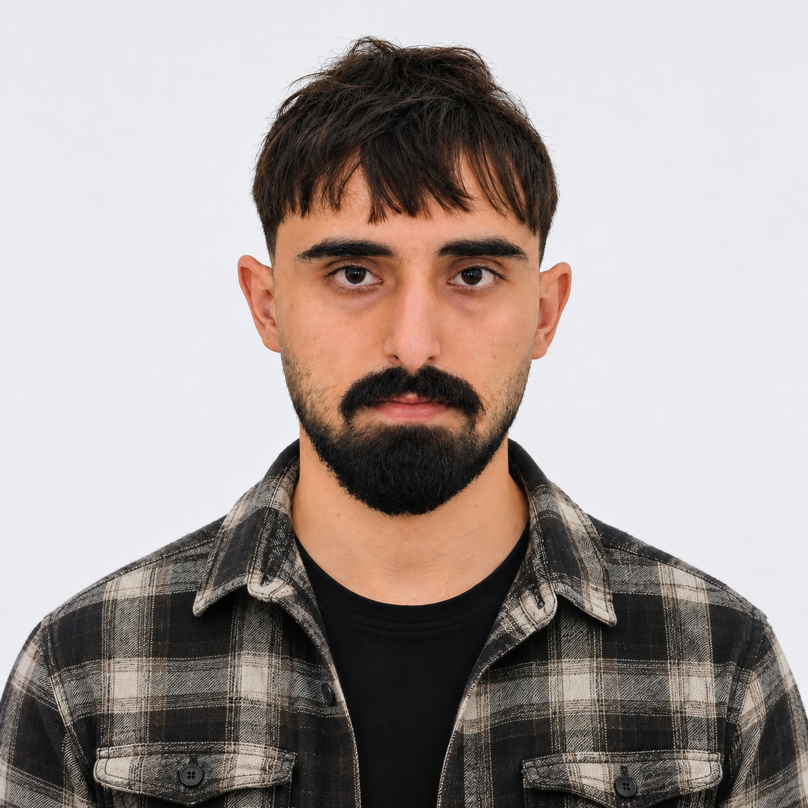

Profil
Ich habe Luft- und Raumfahrttechnik studiert und orientiere mich neu. Mich interessieren unter anderem Mechatronik, Chemieingenieurwesen, Pharmazie,Geodäsie, Mediendesign und KI. Mein Abitur schloss ich mit der Gesamtnote 1,0 ab und erhielt den GDCh-Abiturpreis in Chemie.
Kontakt
Eine Idee beginnt mit einem Gespräch.
Ich freue mich über Kontakte zu dualen Studienmöglichkeiten, Praktika und Projekten an der Schnittstelle von Naturwissenschaft, Technik und Gestaltung.